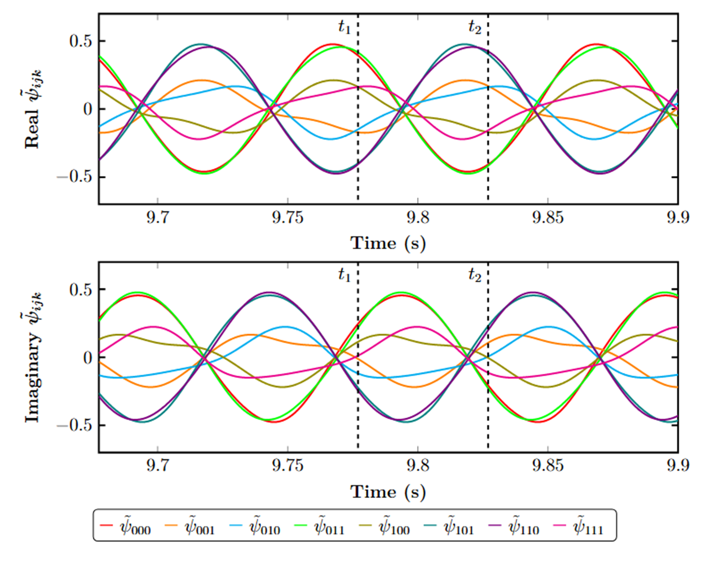
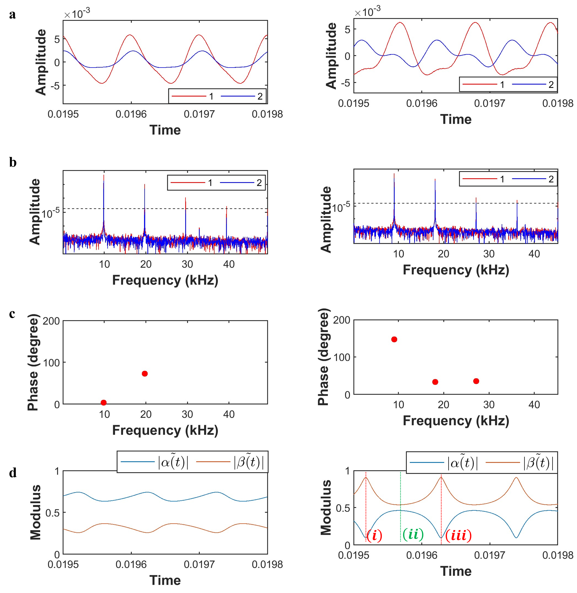
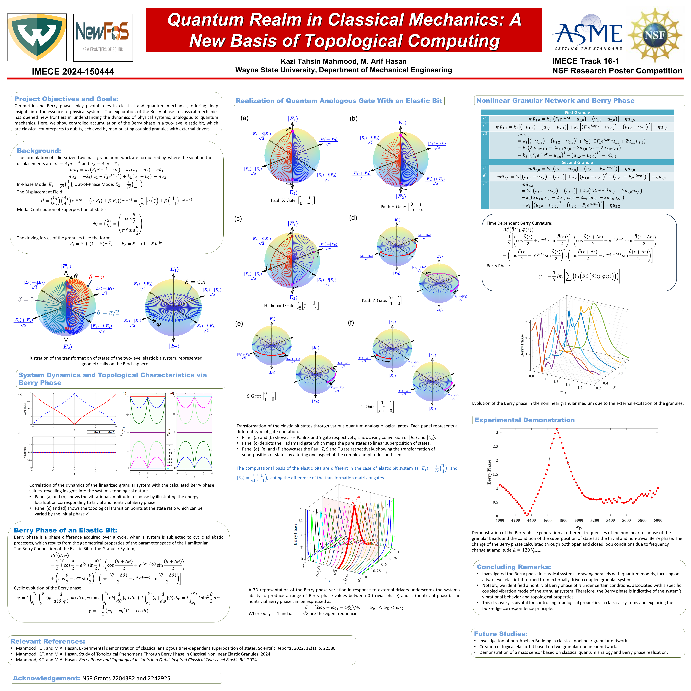
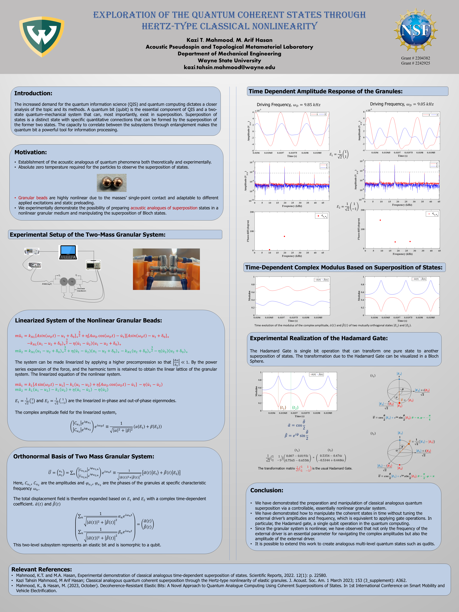
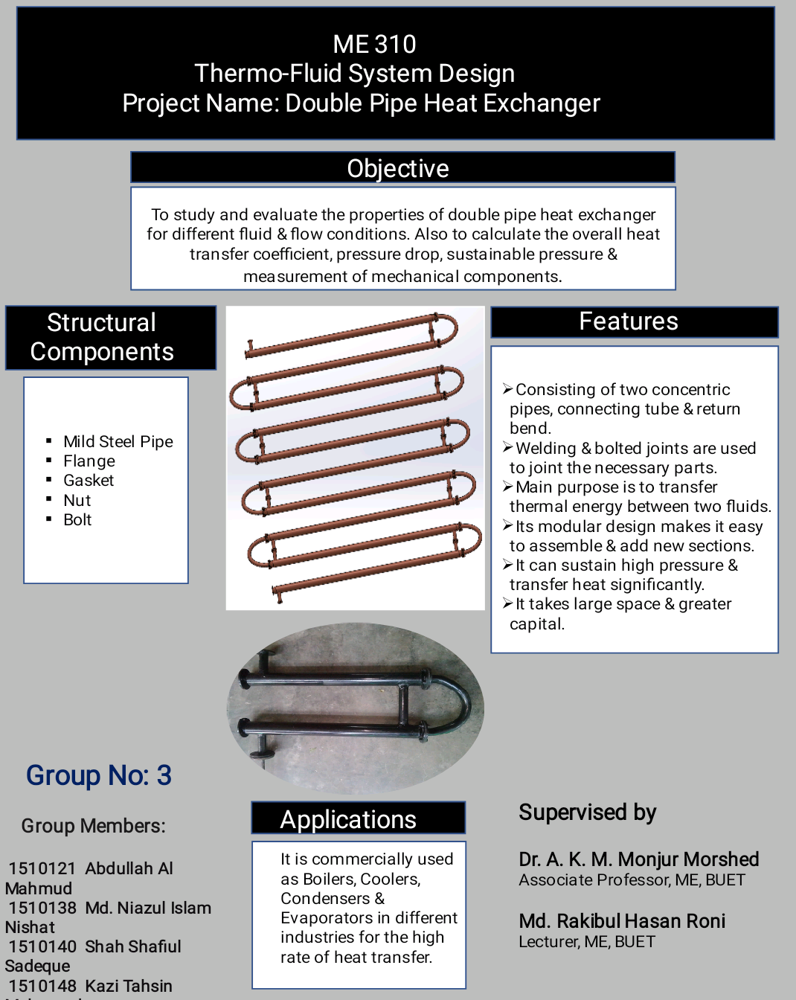
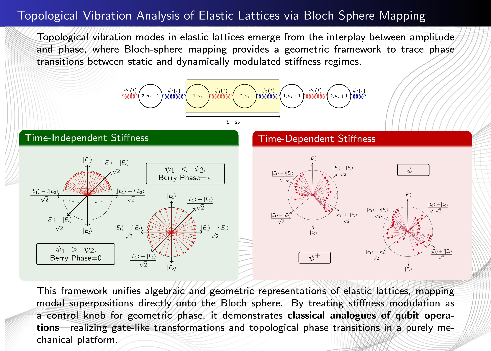
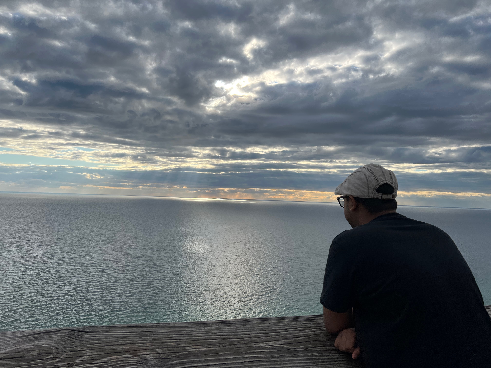
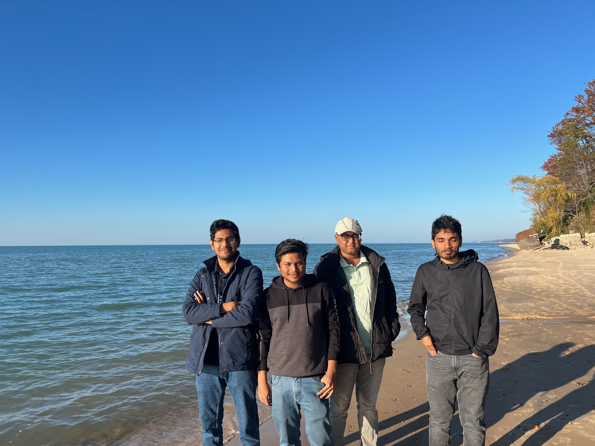
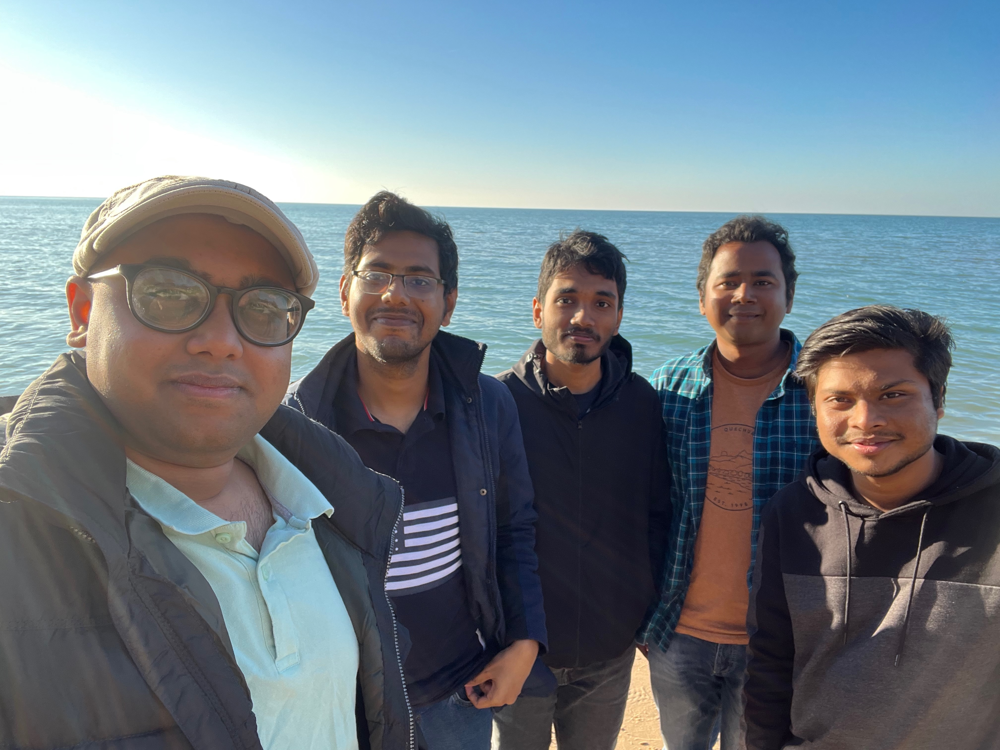
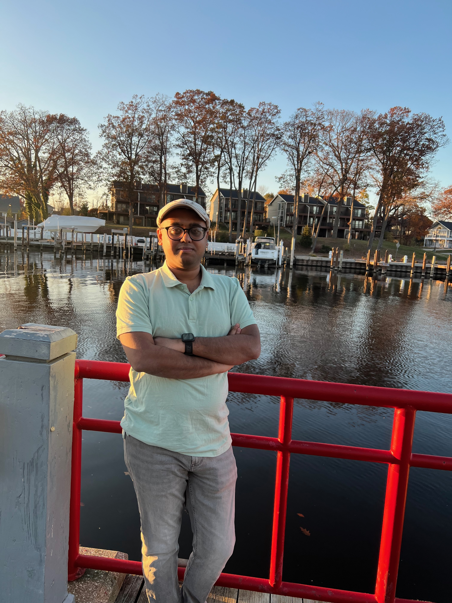

I am Kazi Tahsin Mahmood, a Ph.D. in Mechanical Engineering from Wayne State University.
My research specializes in Nonlinear Dynamics, Topological Metamaterials,
and Quantum Analogous Computing. I develop classical elastic analogs of quantum
systems — from elastic bits and Berry phase generation to topological phase transitions
in granular networks.
My work sits at the intersection of mechanics, wave physics, and information science. I am particularly interested
in how structured classical systems can reproduce key features that are usually associated with quantum platforms,
such as two-state dynamics, superposition-like behavior, geometric phase, and topological protection. Through this lens,
I use mechanical and acoustic systems not only as engineering objects, but also as physical platforms for studying
computation-inspired behavior in a measurable and experimentally accessible way.
I am currently a Research Assistant at Wayne State University and a Research Collaborator at the University
of Arizona's New Frontiers of Sound (NewFoS) center. My research combines theory, numerical modeling,
and experiment, with experience spanning nonlinear oscillator systems, granular metamaterials, acoustic waveguides,
Bloch-sphere-based state representations, and topological phase analysis. Across these projects, I aim to build
scalable and physically intuitive frameworks for quantum-inspired information processing in room-temperature classical systems.
Beyond research, I enjoy mentoring students, teaching engineering mechanics, and communicating complex ideas in a way
that is both rigorous and accessible. I also serve as a peer reviewer for Scientific Reports (Nature Portfolio),
Nonlinear Analysis (Elsevier), and the Journal of Vibration & Acoustics (ASME), as well as the International Design Engineering Technical Conferences & Computers and Information in Engineering Conference (IDETC-CIE) (ASME). More broadly,
I am motivated by problems that connect deep physical principles with practical applications, especially where mechanics,
topology, sensing, and computation begin to overlap.
Research Interests
Topological MetamaterialsQuantum Analogous MechanicsNonlinear DynamicsAcoustic WaveguidesVibrational MechanicsElastic Bit/ Phi Bit
AutoCADSolidWorksGranular Bead NetworksMass-Conical Spring ModelsCoupled Linear Waveguides
Productivity
LaTeXMicrosoft Office
Research Experience
Academic & Collaborative Projects
Current Direction
Quantum-inspired state control in nonlinear elastic and acoustic networks.
Core Methods
Asymptotic perturbation, molecular dynamics, Bloch-sphere mapping, and experiment-driven modeling.
Applications
Wave-based information processing, topological sensing, and scalable classical analogues of qubits.
Graduate Research Assistant
Wayne State University — Department of Mechanical Engineering, Detroit, MI
May 2024 – Present
Elastic Bit: Developed a classical two-state elastic-bit framework in a nonlinear mechanical oscillator, where experimentally measured harmonic amplitudes and relative phases were used to build a Bloch-sphere-inspired state representation. Combined analytical modeling with experimental validation to demonstrate controllable state evolution, modal superposition-based behavior, and stable room-temperature operation.
NSF Grant 2204382
Berry Phase: Developed a theoretical and computational framework to show that classical state representations in both linear and nonlinear mechanical systems can accumulate Berry phase during closed trajectories in parameter space. By tracking Bloch-sphere-inspired state evolution, this work demonstrated how geometric phase emerges from controlled cyclic motion and how it can be linked to state switching, phase manipulation, and the underlying topological structure of the system.
NSF Grant 2242925
Logical Elastic Bit: Extended the elastic-bit concept to a nonlinear two-mass conical-spring oscillator, where distinct harmonic spectral blocks within a single resonator were used to construct multiple logical elastic bits. Developed an analytical and computational framework for state initialization, controlled evolution, and mode-based state representation, showing how higher-dimensional logical states can be generated and scaled from the rich harmonic structure of one mechanical system.
Topological Transitions: Investigated symmetry-driven topological transitions in granular and elastic lattice systems using molecular dynamics simulations and band-structure analysis. Examined how changes in lattice symmetry, particularly inversion symmetry, govern Zak-phase evolution and the emergence of topological phase transitions, and showed how these transitions can be used to control edge-state localization and wave behavior in mechanical networks.
Topological Mass Sensor: Developed a phase-based mechanical sensing framework by translating elastic-bit state evolution into a mass detection platform. By tracking defect- or mass-induced changes in geometric phase and Bloch-sphere-inspired state trajectories, this work showed how small perturbations can be identified through state-sensitive phase evolution rather than amplitude alone, providing a more robust and physically informative sensing strategy.
Research Collaborator
New Frontiers of Sound (NewFoS) — The University of Arizona, Tucson, AZ
Sep 2023 – Present
Primary Investigator: Led a collaborative research effort on multi-state and multi-bit elastic-state analogues in a nonlinear mass-conical spring oscillator, where distinct harmonic spectral blocks within a single mechanical system were used to construct two-bit and three-bit elastic states. Developed the analytical framework for state generation, controlled evolution, and gate-like transformations, including Householder-based state transitions, to demonstrate a scalable room-temperature platform for mechanically realized logic and state manipulation.
Co-Investigator: Contributed to the development of the Phi-Bit, a classical acoustic qubit analogue realized in a three-waveguide coupled system. Developed modeling and analysis methods to identify stable and controllable phase-defined states, and helped extend elastic-bit-inspired state concepts from discrete mechanical oscillators to continuous acoustic platforms.
Undergraduate Research Assistant
Bangladesh University of Engineering & Technology (BUET) — Dhaka, Bangladesh
Nov 2019 – Feb 2021
Electro-Thermo-Mechanical Analysis of MMC: Studied Joule-heating-driven thermal stress in graphite-reinforced metal matrix composites under electrical loading. Combined finite element modeling with tensile and compression testing to identify stress limits and failure-prone regimes.
Heat Pipe Heat Exchanger Modeling: Developed analytical and numerical models of a heat-pipe heat exchanger for induction-motor cooling. Evaluated geometry, working fluid, and fin design to reduce thermal resistance and improve passive heat removal.
In our system, an elastic bit is a two-state classical information unit formed by the nonlinear vibration of coupled granular beads, where the measured amplitudes and relative phases of the participating modes define a state vector analogous to a qubit on the Bloch sphere.
Problem
Most classical mechanical systems lose the delicate state behavior needed to mimic quantum-style information encoding.
Approach
Combined asymptotic perturbation methods, nonlinear oscillator design, and experiment-driven validation to identify protected operating regimes.
Outcome
Established a platform for elastic-bit realization, time-dependent state control, and logical extension toward multi-bit architectures.
The elastic bit behaves as a two-state classical system whose amplitudes and relative phase define a normalized state vector, making it directly comparable to a qubit representation.
Like a qubit, it can occupy superposition-like states and be visualized on a Bloch sphere, but unlike quantum qubits it operates through measurable macroscopic vibrations at room temperature.
The platform supports controllable state evolution, gate-like operations, and a natural pathway toward logical elastic bits and multi-bit architectures in later work.
Showed that Berry phase accumulation in our classical elastic system is a direct signature of its topological nature, allowing us to identify how controlled state evolution, symmetry, and parameter variation reveal robust topological behavior in a mechanical platform.
Problem
Phase evolution in nonlinear networks is difficult to interpret and even harder to communicate visually.
Approach
Mapped elastic states to geometric representations and tracked how controlled parameter changes shape state trajectories.
Outcome
Produced a narrative framework that connects elastic state manipulation, topological insight, and measurable system response.
The system offers a controllable and measurable route to topological state manipulation without the fragility typically associated with quantum hardware.
Its phase-guided robustness makes it a promising platform for topological information processing, where encoded states can remain stable against local perturbations.
These results help pave the way toward topological and edge computing by showing how mechanical systems can host protected state evolution and computation-relevant transitions.
Developed a topological mass-sensing concept in which added mass shifts the phase and state evolution of an elastic system, allowing the sensing signal to be read through topologically informed response changes rather than only through conventional amplitude or frequency shifts.
Problem
Conventional sensing architectures can be highly sensitive to noise, calibration drift, and geometric perturbation.
Approach
Used topological state behavior as the sensing backbone so response signatures remain distinct and easier to detect.
Outcome
Turned abstract topological mechanics ideas into a direct application story with clear engineering relevance.
The sensing platform is designed to be more robust because the readout is tied to phase-protected state behavior, which can be less vulnerable to noise and local imperfections.
By connecting sensing to topological state transitions, the system offers a more interpretable pathway for detecting small perturbations with high precision.
This work points toward a new class of topological sensors that combine mechanical simplicity with computation-aware, state-based readout strategies.
BUETFinite Element AnalysisComposite Materials
Studied the electro-thermo-mechanical response of metal matrix composites reinforced by graphite fibers, with emphasis on stress limits, thermal gradients, and failure-prone operating regions.
Problem
Composite systems under electrical loading can exhibit coupled stress and temperature fields that are difficult to predict safely.
Approach
Built numerical models and interpreted stress-temperature distributions to evaluate design constraints and material response.
Outcome
Created a solid mechanics foundation that now complements your current nonlinear and topological research portfolio.
Shows breadth in simulation, materials, and engineering analysis before the Ph.D. work.
Useful for demonstrating long-term development across research themes rather than a narrow single-topic profile.
Already has figure-ready visual outputs that fit naturally into the site.
Publications
Peer-Reviewed Journals
1
Topological Vibration Analysis of Elastic Lattices Via Bloch-Sphere Mapping
K.T. Mahmood, M.A. Hasan
Journal of Vibration and Acoustics, 148(4), 041004 · 2026
Mechanical lattices support topological wave phenomena governed by geometric phases. We develop a compact Hilbert-space description for one-dimensional elastic chains, expressing intracell motion as a normalized superposition of orthogonal eigenstates and tracking complex amplitudes as trajectories on a Bloch sphere. For diatomic lattices, this construction makes inversion symmetry protection explicit: the relative phase between in-phase and out-of-phase modes is piecewise locked, and the Zak phase is quantized with band-dependent jumps at symmetry points. Extending the framework to triatomic lattices shows that restoring inversion retains quantization, whereas breaking it dequantizes the geometric phase while leaving the spectrum origin invariant. Viewing norm-preserving transformations of the modal coefficient pair as Bloch-sphere rotations, we demonstrate classical analogs of single-qubit logic gates: a π phase rotation about a transverse axis swaps the modal poles, and a longitudinal-axis phase flip maps balanced superpositions to their conjugates. These gate-like operations are realized by controlled evolution across wavenumber space and can be driven or reprogramed through spatiotemporal stiffness modulation. Introducing space-time modulation hybridizes carrier and sideband harmonics, producing continuous phase winding and open-path geometric phases accumulated along the Floquet trajectory. Across static and modulated regimes, the framework unifies algebraic and geometric viewpoints, is robust to gauge and basis choices, and operates directly on amplitude-phase data. Results clarify how symmetry, modulation, and topology jointly govern dispersion, modal mixing, and phase accumulation, providing tools to analyze and design vibration and acoustic functionalities in engineered structures.
2
Multi-Bit Quantum-Inspired Dynamics in Nonlinear Mechanical Oscillators
K.T. Mahmood, M.A. Hasan, A.N.E. Faiaz, P.A. Deymier, K. Runge
Vibration responses from nonlinear mechanical systems exhibit rich dynamical structure that can be utilized for information encoding and processing. We demonstrate that such structures can be used to encode and manipulate information in a manner analogous to multi-qubit systems. Using a coupled mass and conical spring oscillator, we reveal that distinct harmonic segments of the nonlinear response can be projected onto modal eigenstates to form two-level elastic bit subsystems, which are analogous to qubits. These bits arise from measurable amplitudes and phase relationships across the Fourier spectrum and evolve deterministically under steady-state excitation. By combining multiple spectral segments within a single oscillator, we achieve two-bit and three-bit states that occupy four- and eight-dimensional Hilbert spaces, respectively. The time dependence of the complex modal coefficients yields intrinsic transformations that act as phase and rotation type gates. The temporal evolution of the complex modal coefficients results in phase accumulation and a rotation-like evolution within this state space. To characterize how the system moves between experimentally observed logical states at different times, we derive a Householder reflection that yields the exact Hermitian and unitary operator connecting these states. This unitary transformation is subsequently decomposed into sequences of analogous quantum gates, providing a representation of the observed modal evolution in terms of familiar multi-qubit logic primitives. This spectral encoding approach enables scalable state construction within a single mechanical platform, establishing a pathway toward room-temperature mechanical computation based on deterministic nonlinear dynamics.

3
Experimental Realization of Logical Elastic Bits as Qubit Analogues in a Nonlinear Oscillator
K.T. Mahmood, A.N.E. Faiaz, M.A. Hasan, P.A. Deymier, K. Runge, J.A. Levine
Nonlinear mechanical oscillators can emulate qubit analogue algebra by leveraging multiple harmonics of large-amplitude vibrations. We realize a logical elastic bit, a room temperature mechanical analogue of a qubit, in a two-mass oscillator joined by a conical spring whose graded stiffness generates a robust sequence of phase-coherent harmonics. From time-series velocity measurements, a Fourier-projection maps the response onto the complete space of in-phase and out-of-phase eigenvectors. The resulting complex coefficients define a Bloch-sphere representation in which classical superpositions are directly controllable. Moreover, we gain more control over the coefficients by pairing the Fourier harmonics in different orders. When the paired Fourier components share a frequency, the coefficients are independent of time, producing tunable states that can serve as phase-defined memory. Pairing distinct harmonics introduces a beat frequency that drives deterministic precession of the Bloch vector, realizing single-bit rotations (e.g., Pauli-X and Hadamard analogues) without the need of additional external input, with time as the gate clock. By splitting the spectrum into blocks, a single resonator can host several elastic bits at once. The Hilbert space grows with the number of blocks while the hardware stays the same, allowing scalable architectures that show classical non-separable correlations. A linear mass-spring model yields closed-form eigenfrequencies and Bloch-angle formulas that overlay measured trajectories across resonance and provide design rules for state initialization and gate timing. All operations occur at ambient conditions and require no feedback or cryogenics, establishing a simple, reproducible route to quantum-inspired logic in macroscopic mechanics.
4
Topological Insights from State Manipulation in a Classical Elastic System
The exploration of the Berry phase in classical mechanics has opened new frontiers in understanding the dynamics of physical systems, analogous to quantum mechanics. Here, we show controlled accumulation of the Berry phase in a two-level elastic bit, which is a classical counterpart to qubits, achieved by manipulating coupled granules with external drivers. Employing the Bloch sphere representation, the paper demonstrates the manipulation of elastic bit states and the realization of quantum-analog logic gates. A key achievement is the calculation of the Berry phase for various system states, revealing insights into the system's topological nature. Unique to this study is the use of external parameters to explore topological transitions, contrasting with traditional approaches focusing on internal system modifications. By linking the classical and quantum worlds through the Berry phase of an elastic bit, this work extends the potential applications of topological concepts in designing new materials and computational models.
5
Experimental Demonstration of Classical Analogous Time-Dependent Superposition of States
One of the quantum theory concepts on which quantum information processing stands is superposition. Here we provide experimental evidence for the existence of classical analogues to the coherent superposition of energy states, which is made possible by the Hertz-type nonlinearity of the granules together with the external driving field. The granules' nonlinear vibrations are projected into the linear modes of vibration, which depend on one another through the phase and form a coherent superposition. We show that the amplitudes of the coherent states form the components of a state vector that spans a two-dimensional Hilbert space, and time enables the system to span its Hilbert space parametrically. Thus, the superposition of states can be exploited in two-state quantum-like computations without decoherence and wave function collapse. Finally, we demonstrate the experimental realization of applying a reversible Hadamard gate to a pure base state that brings the state into a superposition.

6
Page-curve-like entropy dynamics in a classical elastic bit lattice
A.N.E. Faiaz, D.J. McMullen, K.T. Mahmood, M. Arif Hasan
Chaos: An Interdisciplinary Journal of Nonlinear Science, 36(4) · 2026
Classical nonlinear lattices can be engineered to reproduce information-theoretic phenomena usually reserved for quantum systems. Here, we show that four elastically coupled steel spheres, configured as two epoxy-bonded dumbbells, reproduce the characteristic rise-and-fall "Page curve" of bipartite entanglement entropy. Each dumbbell forms an elastic bit, classical analogous to a qubit, whose normal modes act as the classical counterpart of a qubit's basis states. By exciting the lattice with harmonic driving, recording the granules' velocities with a laser-Doppler vibrometer, and monitoring its time-resolved normal-mode amplitudes, we map the system's state into a four-dimensional Hilbert space and define a classical entanglement entropy from the reduced modal density matrix. This entropy rises and falls cyclically, tracing a profile that mirrors the Page curve predicted for unitary black-hole evaporation at the level of bipartite entropy evolution, while remaining as a classical analog of subsystem correlation dynamics rather than a model of Hawking radiation or quantum gravity. The observed dynamics arise entirely from nonlinear mode coupling and are tunable through the driver frequency, amplitude, and phase. Our results extend entanglement-based diagnostics into tabletop mechanics, demonstrating that carefully designed classical platforms can emulate key features of quantum information flow and offering a new, accessible avenue for probing foundational questions at the intersection of dynamics and information theory.
Spring 2026 APS Eastern Great Lakes Section (EGLS) & MIAAPT Joint Meeting, Wayne State University, Detroit, Michigan, USA
Technical Talk
2026
190th Meeting of the Acoustical Society of America, Philadelphia, Pennsylvania, USA
Technical Talk
2025
188th Meeting of the Acoustical Society of America, New Orleans, Louisiana, USA
Technical Talk
2025
NewFoS Stakeholder Meeting, Tucson, Arizona, USA
Poster
2024
International Mechanical Engineering Congress & Exposition (IMECE), Portland, Oregon, USA
Technical TalkPoster
2024
APS Eastern Great Lakes Fall Meeting, Marietta College, Marietta, Ohio, USA
Technical Talk
2024
APS Eastern Great Lakes Spring Meeting, Kettering University, Flint, Michigan, USA
Technical TalkPoster
2024
APS March Meeting, Minneapolis, USA
Technical Talk (Online)
2024
187th Meeting of the Acoustical Society of America
Technical Talk (Online)
2024
Graduate Research Symposium, Wayne State University
Poster
2023
International Conference on Smart Mobility and Vehicle Electrification, Lawrence Technological University, Detroit, Michigan, USA
Technical Talk
2023
184th Meeting of the Acoustical Society of America, Chicago, Illinois, USA
Technical Talk
Poster Presentations
Research Posters & Showcases

Poster 1View Full Poster

Poster 2View Full Poster
Poster 3View Full Poster

Poster 4View Full Poster

Topological VibrationView Full Poster
Teaching & Mentoring
Academic Service & Professional Experience
Graduate Teaching Assistant
Wayne State University — Detroit, MI
Jan 2022 – May 2024
ME 3400: Dynamics IME 5000: Engineering Analysis
Served as Course Instructor, delivering lectures, designing problem sets, and evaluating student performance for undergraduate and graduate cohorts.
Provided lab section support, grading, feedback, and individualized student mentoring; assisted in exam administration.
Research Experience Mentor - NSF NewFoS REM Program
New Frontiers of Sound (NewFoS) — NSF Project
Jan 2023 – May 2025
Mentored and supervised 8 undergraduate researchers through the NSF NewFoS Research Experience and Mentoring program in nonlinear and topological acoustics.
Trained students in elastic waveguide systems: mode identification, dispersion characterization, and phase-amplitude mapping for classical analogues of quantum information states.
Guided independent projects culminating in poster presentations at institutional and national conferences.
Professional Experience
Industry & Internship
Engineer Trainee (Intern)
BSRM Steel Limited — Chattogram, Bangladesh
Jan 2020 – Feb 2020
Gained hands-on experience in industrial steel-rod manufacturing: billet reheating, rolling, and controlled cooling for construction-grade reinforcement bars.
Assisted in mechanical maintenance of re-rolling mill equipment: inspections, alignment, lubrication, and fault diagnostics.
Blogs
Writing, Ideas & Research Notes
Divincenzo's Criteria
What Does It Take to Build a Quantum Inspired Computer? A 1990s Idea Is Guiding New Research Today
When quantum computing first emerged in the late 20th century, scientists were faced with a deceptively simple question: What does it actually take to build a working quantum computer? Classical computers had a straightforward answer. Their basic units of information bits are handled by transistors that reliably switch between 0 and 1. But quantum computers rely on qubits, tiny two-level systems that can exist in 0, or 1, or a combination of both at once. These delicate states can also become entangled, linking different qubits in ways that allow quantum computers to outperform even the fastest supercomputers for certain tasks.
The challenge, however, is that qubits are extremely fragile. They lose their quantumness quickly, they require precise control, and they are notoriously difficult to scale into large, interconnected machines. To bring order to this new field, physicist David P. DiVincenzo proposed a simple but powerful checklist in 1996, now famously known as DiVincenzo's criteria. His work identified the essential capabilities any real quantum computer must have. These criteria became a common language for the community: whether the platform used superconducting circuits, trapped ions, photon pulses, or spins in semiconductors, researchers would ask the same question: does it satisfy DiVincenzo's requirements?
At their heart, the criteria revolve around three big ideas. First, a functional device needs well-defined and controllable qubits that can be prepared, changed, and measured on demand. Second, the information stored in a qubit must survive long enough to perform calculations, requiring long-lived coherence. And third, a true quantum computer must be able to scale, hosting many qubits that interact in predictable and useful ways. These ideas helped transform quantum computing from a theoretical possibility into a global race to build practical machines. But they have also inspired a deeper question: Do these requirements apply only to quantum systems, or can we use them to benchmark new kinds of classical technologies that behave in quantum-like ways?
How a Mechanical Elastic-Bit Platform Meets Those Same Requirements
The core idea behind this work is the creation of an elastic bit, a qubit-like state that forms not from quantum particles but from the organized vibrations of a classical nonlinear mechanical system. When this kind of system is driven, it does not vibrate at just one frequency. Instead, it produces many harmonics, multiple tones whose amplitudes and phases change together in a structured and predictable way. By comparing how these harmonics align with the system's two fundamental movement patterns, one where the components move together and one where they move in opposition, we can define a two-level state. This two-level mapping is what we call an elastic bit: a stable and controllable information unit stored in the rhythm of the system's vibration.
This approach naturally mirrors several of DiVincenzo's original requirements. To create a starting state, we simply choose a set of driving conditions that force the nonlinear elastic network into a repeatable vibration pattern. Once active, the harmonics maintain steady phase relationships over long durations, allowing the encoded information to remain stable. The elastic bit can then be steered by adjusting how energy is fed into the network, changing the drive amplitude, its frequency, or how strongly different modes interact. These adjustments move the bit's state along predictable paths, just like quantum gates move a qubit around the Bloch sphere. Impressively, the same mathematical tools that describe quantum operations, such as Householder reflections, also describe the transformations we observe in this classical system.
A key requirement of any qubit platform is the ability to measure individual states without disturbing the rest of the system. The elastic-bit platform meets this requirement naturally because each bit corresponds to a distinct harmonic in the vibration spectrum. This means we can measure the bit's amplitude and phase by observing only that harmonic, without affecting those at other frequencies. The result is a clean and selective readout method, very similar to how quantum systems measure qubits one at a time.
All of these capabilities suggest something powerful: even though the elastic bit is entirely classical, it obeys many of the same structural rules as a real qubit. It has a controlled starting state, it evolves coherently, it can be manipulated through gate-like operations, and it can be measured independently of other bits. From the perspective of quantum information science, this means the elastic bit can act as a practical testbed for exploring quantum-style logic, geometric phase control, and gate design, without the fragility, cost, or temperature constraints of true quantum systems. In this way, classical nonlinear networks can help develop, prototype, and visualize concepts that are central to quantum technologies, offering a bridge between the quantum world and real-world experimental platforms.
Topological Structure and Its Role in Elastic-Bit Operations
Topology, in physics, refers to features of a system that stay the same even when the system is bent, stretched, or smoothly deformed. These features are not sensitive to small imperfections or noise, which makes topological effects extremely robust. In quantum materials, topology protects special states that can carry information without being easily disturbed, an idea that is central to topological quantum computing.
In the elastic-bit platform, topology shows up in the way the system responds when external drive settings are slowly cycled. As the controls move the elastic bit around on the Bloch sphere, the state does more than simply trace a path, it accumulates a geometric phase that depends only on the area enclosed by that path. This is a topological effect: two very different paths can give the same result if they sweep out the same area, and no matter how complicated the motion is, if it encloses zero area, the phase remains trivial. Essentially, the system behaves like a switch that flips only when the control loop crosses a topologically meaningful threshold.
This topological phase is directly imprinted onto the elastic bit, because the bit's state is defined by the relative amplitude and phase of the network's vibrations. As the control loop wraps around different portions of the Bloch sphere, the bit acquires a geometric shift that depends only on the global structure of that loop. In experiments, this shift reveals itself through clear physical signatures: energy concentrating onto one part of the system, or the phase difference between channels pausing at fixed points. These behaviors indicate that the system has undergone a topologically nontrivial evolution.
The advantage of this topological layer is reliability. Topological operations do not depend on perfect timing or precise drive strength. Small changes in experimental conditions or tiny imperfections in the mechanical network do not affect the final outcome. Only a major change to the overall path, one that alters the area it covers, can modify the geometric phase. This resilience strengthens the entire elastic-bit architecture, allowing it to perform robust, repeatable transformations that mirror the protected operations sought in topological quantum computing. Even though the system is classical, it demonstrates that topological ideas can enhance information processing far beyond the quantum realm alone.
Topological Computing
How Vibrations Reveal Topological Physics in Classical Mechanical Systems
Topology, Berry phase, classical mechanics
For decades, topology has helped physicists explain why some systems behave in surprisingly robust ways. It has shaped how researchers think about quantum matter, protected edge states, and geometric phases that depend not on local details, but on the overall path a system takes. Now, a growing body of work is showing that some of these same ideas can appear in an unexpected place: ordinary mechanical systems made of masses, springs, and vibrations.
Recent studies in elastic and nonlinear mechanical systems suggest that topology is not limited to exotic materials or cryogenic quantum devices. Instead, carefully designed classical structures can display Berry phases, Bloch-sphere trajectories, symmetry-protected phase behavior, and even logic-gate-like state transformations. In these systems, the key ingredients are not electrons or quantum wavefunctions, but measurable vibration amplitudes and phases.
One important advance came from experiments showing that nonlinear granular systems can support classical analogues of coherent superposition. In that work, the vibration of two driven granules was projected onto a two-dimensional state space, allowing the motion to be described in a way that resembles a quantum two-state system. The result was not a true qubit, but a classical platform in which superposition-like states could be created, observed directly, and even manipulated through reversible gate-like operations such as a Hadamard analogue.
That early result opened the door to a broader question: if classical mechanical motion can be organized into a two-state representation, can it also carry the geometric and topological structure that makes quantum-inspired systems so interesting? Later work answered that question by showing controlled accumulation of Berry phase in a two-level elastic bit, a classical counterpart to a qubit formed from coupled granules. Using external driving conditions, researchers traced the state on a Bloch sphere and connected the evolution of vibration states to topological phase behavior.
The idea was pushed further in a study of strongly nonlinear classical dynamics, where Berry phase was shown to emerge over time without changing the system's internal configuration or external loading conditions. Instead of manually steering the structure through different parameter settings, the system's gauge-related quantities evolved naturally in time, producing phase accumulation through its own nonlinear motion. That work also reported something especially striking: multiple nontrivial Berry-phase signatures appearing at different frequencies in a classical system, rather than a single isolated topological resonance.
In parallel, the field has expanded beyond granular contacts to simpler and more practical oscillator platforms. A recent study demonstrated logical elastic bits in a two-mass system connected by a conical spring. Because the spring's graded stiffness generates a rich harmonic spectrum, the measured motion can be projected onto in-phase and out-of-phase eigenvectors and represented on a Bloch sphere. By selecting and pairing Fourier harmonics, the system can realize controllable static states, deterministic precession, and gate-like operations, all at room temperature and without the need for cryogenics or additional feedback. The same work suggests that multiple logical bits may be hosted in a single resonator by partitioning the spectrum into blocks, offering an intriguing route toward scalable quantum-inspired architectures built from classical hardware.
The topological picture becomes even clearer in recent work on elastic lattices. There, researchers developed a compact Hilbert-space framework for one-dimensional mass-spring chains, mapping intracell motion onto the Bloch sphere. In diatomic lattices, inversion symmetry locks the relative phase between modal components and quantizes the Zak phase. In triatomic lattices, breaking inversion symmetry removes that quantization while leaving the spectrum's origin unchanged. The framework also shows how state evolution in these lattices can be interpreted geometrically, with mode transformations appearing as rotations on the Bloch sphere and spatiotemporal modulation generating open-path geometric phases through Floquet-like trajectories.
Taken together, these results point to a larger shift in how mechanical motion is understood. Vibrations are no longer just signals to be damped, controlled, or avoided. In the right structure, they can act as information-bearing states with geometry, phase, and topological organization. That matters because classical mechanical systems are accessible. They are macroscopic, measurable, and comparatively easy to build and test. Unlike fragile quantum devices, they can often operate at ambient conditions while still reproducing parts of the mathematical structure that makes topological and quantum-inspired systems powerful.
This does not mean a vibrating spring is a quantum computer. These are classical analogues, not replacements for genuine quantum hardware. But that distinction does not make the work less important. In some ways, it makes it more useful. Classical topological mechanical systems offer a visible and tunable testbed for ideas that are often difficult to probe directly in microscopic settings. They may help researchers study state preparation, phase control, robustness, and logic-like evolution in platforms that are cheaper, simpler, and easier to manipulate.
The broader promise is not just technological. It is conceptual. These studies suggest that topology is not tied to one material class, one length scale, or one branch of physics. It is a deeper organizing principle that can emerge wherever phases, symmetries, and structured state evolution come together. In that sense, the hum of a mechanical oscillator may be revealing something profound: topological physics is not confined to the quantum world. It can also be heard in the language of motion itself.
Journeys
Places, People & Small Discoveries
A visual notebook from the places I have crossed through: conference cities, quiet walks,
mountain air, waterfront evenings, and the small pauses that make travel memorable.
Journey Album
Upper Peninsula
Lake air, northern roads, and quiet edges of Michigan.




Journey Album
Utah
Red-rock scale, desert light, and long horizons.
Journey Album
Arizona
Canyon colors, dry heat, and big southwestern skies.
Journey Album
Yellowstone
Thermal basins, wild landscapes, and changing weather.
Journey Album
Washington DC
Monuments, museums, and walks through history.
Journey Album
Oregon
Evergreen roads, coastlines, and Pacific Northwest light.
Journey Album
Midwest
Campus towns, lakeside evenings, and road-trip fragments.
Awards & Academic Service
Recognition & Contributions
Awards & Grants
Graduate Student Professional Travel Grant
Wayne State University
2024
Peer Reviewer
Scientific Reports, Nature Portfolio
Jan 2024 – Present
Nonlinear Analysis, Elsevier
May 2023 – Present
Journal of Vibration & Acoustics, ASME
Jan 2025 – Present
International Design Engineering Technical Conferences & Computers and Information in Engineering Conference (IDETC-CIE), ASME
2026
Memberships
Student Member, ASME
Jun 2024 – Present
Student Member, American Physical Society (APS)
Jul 2023 – Present
Member, Acoustical Society of America (ASA)
Jan 2023 – Present
Executive Member, BUET Robotics Society
Feb 2016 – Jul 2020
Contact
Get in Touch
Let's Connect
Open to research collaborations, academic opportunities, and discussions about topological mechanics and quantum-analogous systems.